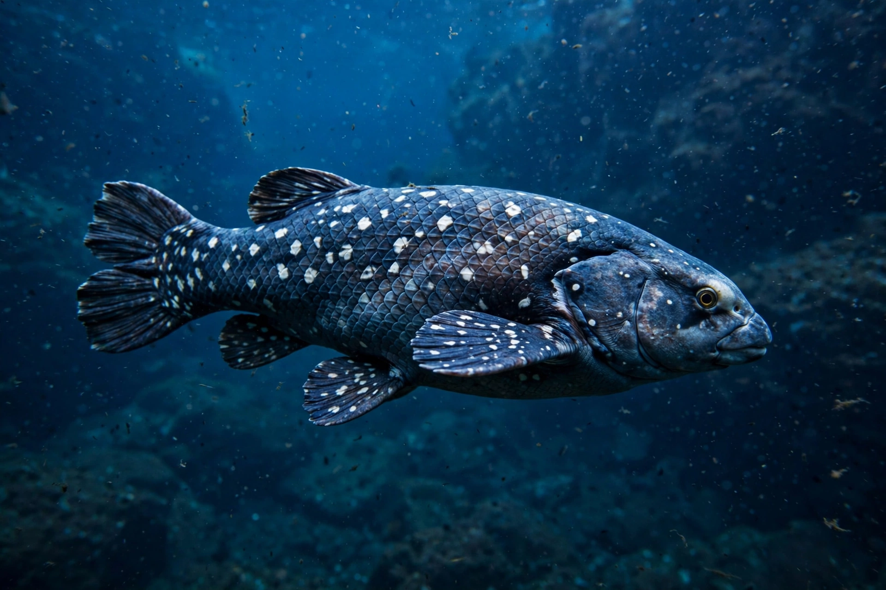

A living fossil is an extant taxon that closely resembles related organisms known only from the fossil record. To be considered a living fossil, the fossil species must be old relative to the time of origin of the extant clade, and the living member must show little morphological change over long geological timescales. The term was coined by Charles Darwin in On the Origin of Species (1859), referring to species such as the platypus and the South American lungfish that "have endured to the present day, from having inhabited a confined area, and from having thus been exposed to less severe competition."
| Organism | Group | Notes |
|---|---|---|
| Coelacanths (Latimeria) | Lobe-finned fish | Order thought extinct for 66 million years until a living specimen was caught off South Africa in 1938 |
| Ginkgo biloba | Gymnosperm tree | Sole survivor of the order Ginkgoales, dating back ~270 million years |
| Horseshoe crabs | Xiphosura | Lineage extends to the Ordovician, ~445 million years ago |
| Nautilus | Cephalopod | Shelled relatives abundant since the Palaeozoic |
| Tuatara | Rhynchocephalia | Sole survivor of an order diverse in the Mesozoic; endemic to New Zealand |
| Wollemi pine | Conifer | Known from fossils until living trees were found in Australia in 1994 |
| Lingula | Brachiopod | Genus with shells nearly unchanged since the Cambrian–Ordovician |
| Velvet worms (Onychophora) | Panarthropoda | Resemble Cambrian lobopodians |
Some biologists criticise "living fossil" as misleading: even morphologically conservative species continue to evolve at the molecular level, and no living species is literally identical to its fossil relatives. Alternative terms such as "stabilomorph" have been proposed for taxa with low rates of morphological evolution, species diversity and speciation.